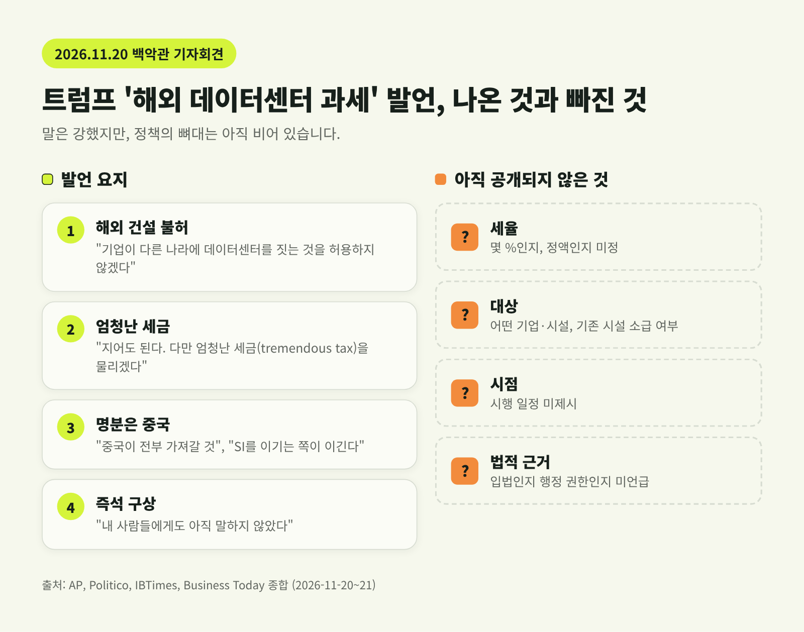
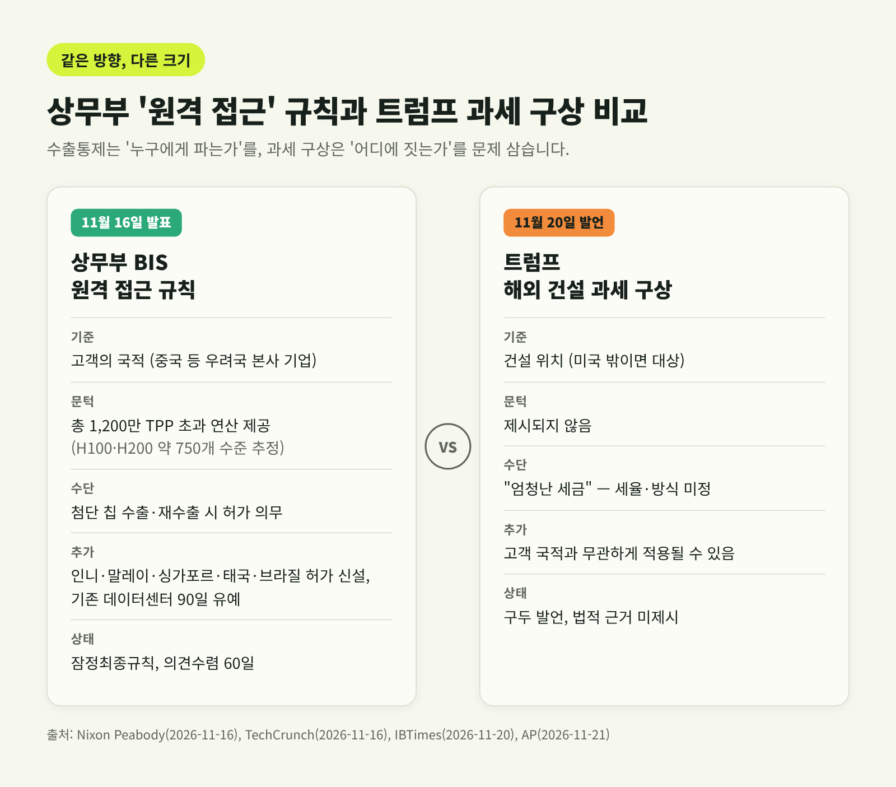
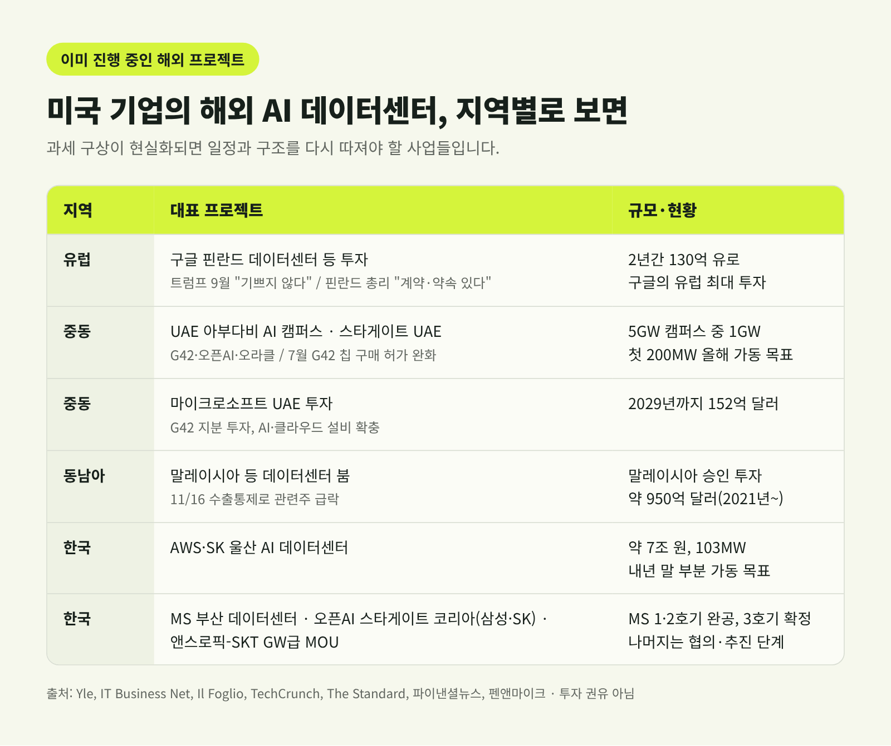
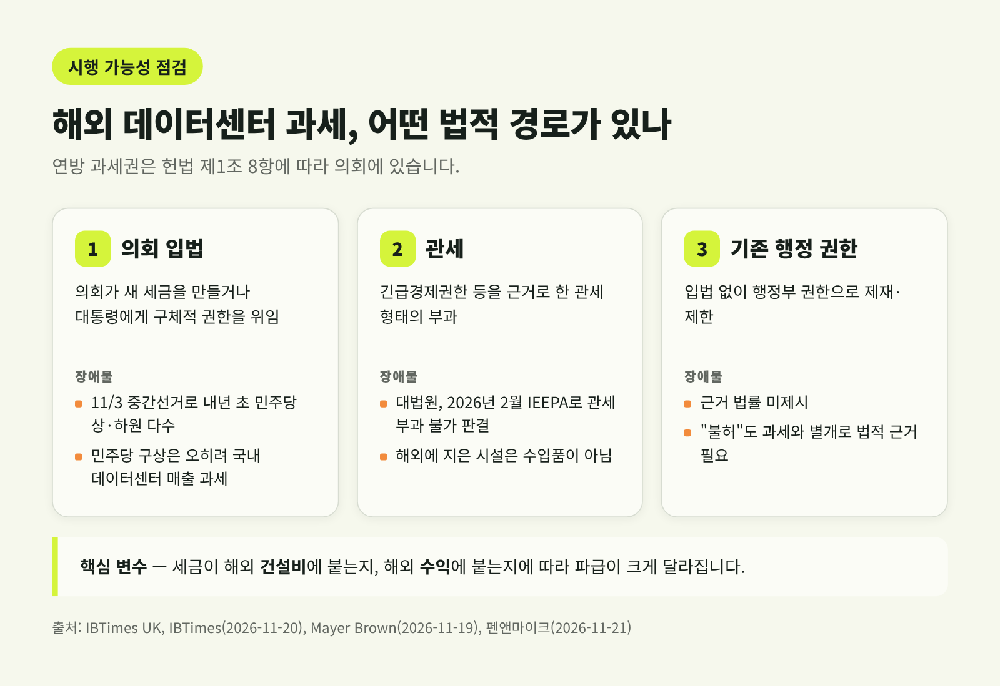
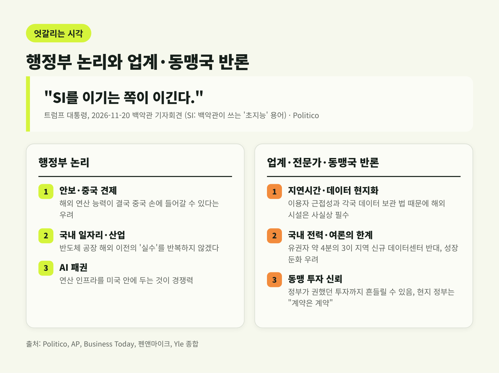

트럼프 해외 데이터센터 과세 경고, 빅테크 AI 투자와 한국에 미칠 영향

트럼프 대통령이 해외에 AI 데이터센터를 짓는 미국 기업에 "엄청난 세금"을 물리겠다고 말했습니다. 이번 글에서는 발언의 내용과 배경, 이미 진행 중인 해외 프로젝트, 실제 시행 가능성, 그리고 한국에 주는 함의를 차례로 정리해 보겠습니다.
3줄 요약
- 11월 20일(현지) 트럼프 대통령이 해외 데이터센터 건설을 "허용하지 않겠다"며 과세를 경고했습니다. 세율·대상·시점은 없고, 참모에게도 미리 알리지 않은 즉석 구상이었습니다.
- 나흘 전 상무부가 중국 기업의 해외 데이터센터 원격 접근을 막는 수출통제를 내놓은 흐름과 맞닿아 있지만, 범위는 훨씬 넓습니다.
- 연방 과세권은 의회에 있고 내년 초 민주당 다수 의회가 출범합니다. 당장 법이 되긴 어렵지만, 한국에 들어오는 미국 빅테크 투자에는 불확실성이 생겼습니다.
■ 무슨 일이 있었나
11월 20일 금요일 오후, 백악관 브리핑룸이었습니다. 아시아 순방에서 막 돌아온 트럼프 대통령은 기자들 앞에서 이렇게 말했습니다.
"우리는 기업들이 다른 나라에 데이터센터를 짓는 것을 허용하지 않을 것입니다." 곧이어 덧붙였습니다. "그렇게 해도 됩니다. 다만 엄청난 세금(tremendous tax)을 물리겠습니다."(AP)
금지인지, 과세인지 한 문장 안에서도 엇갈립니다. 세율도, 대상 기업도, 시행 시점도 나오지 않았습니다. 이미 해외에서 돌아가는 시설까지 포함하는지도 불분명합니다. 대통령 스스로 "내 사람들에게도 아직 말하지 않았다"고 했습니다.(Politico) 현장에 있던 참모들도 처음 듣는 구상이었다는 뜻입니다.
명분은 중국이었습니다. "중국이 전부 가져갈 것이기 때문"에 해외 건설을 두고 볼 수 없다는 것입니다.(Axios, IBTimes 인용) 과거 반도체 공장을 해외로 내보낸 것이 "나라에 매우 파괴적"이었다는 진단도 곁들였습니다. 그는 백악관이 AI 대신 쓰는 용어인 '초지능(SI)'을 꺼내 "SI를 이기는 쪽이 이긴다"고 강조했습니다.(Politico)
국내 건설 반대 여론에 대해서는 결이 다른 처방을 냈습니다. "그들(기업)은 돈이 많습니다. 받아내십시오."(AP) 막지 말고, 지역사회가 대가를 챙기라는 주문입니다. 텍사스가 아니면 캘리포니아, 그것도 아니면 웨스트버지니아로 가면 된다고도 했습니다.
국내 일부 매체는 그가 구글의 핀란드 데이터센터 계획을 직접 거론하며 허용하지 않겠다고 했다고 전했습니다.(경향신문, 펜앤마이크) 다만 영문 주요 보도에서는 이 대목이 확인되지 않아 조심스럽게 볼 필요가 있습니다.

■ 왜 지금인가 — 순방, 중국, 그리고 '원격 접근' 규칙
발언 시점에는 맥락이 겹쳐 있습니다.
먼저 순방입니다. 대통령은 11월 17일 필리핀 마닐라에서 쿼드 회의에 참석했고, 인도·태평양 동맹국과 '초지능 가속기'를 출범시켰습니다.(IBTimes, Politico) 19일에는 중국 선전에서 APEC을 계기로 시진핑 주석, 푸틴 대통령과 첫 미·중·러 3자 정상회의를 열었습니다.(Al Jazeera) 트럼프 대통령은 시 주석과 AI에 "공동 가드레일"을 모색하기로 했다고 말했지만, AI 분야에서 별다른 합의가 없었다는 보도도 있습니다.(Politico, 파이낸셜뉴스) 과세 발언은 그 다음 날 나왔습니다.
더 직접적인 연결고리는 나흘 전 나온 수출통제입니다. 미 상무부 산업안보국(BIS)은 11월 16일 '첨단 반도체 원격 접근 대응' 잠정최종규칙을 발표했습니다.(Nixon Peabody, TechCrunch)
요지는 이렇습니다. 세계 어느 나라의 데이터센터든, 중국 등 우려국에 본사를 둔 기업에 일정 규모 이상의 연산을 빌려준다면 첨단 AI 칩을 들여올 때 미국 정부의 허가를 받아야 합니다. 기준선은 총 1,200만 TPP로, TechCrunch는 엔비디아 H100·H200 약 750개의 최대 연산에 해당한다고 추정했습니다. 중개인을 거친 간접 접근도 대상이고, 기존 계약이 있는 데이터센터는 90일 안에 허가를 받아야 합니다. 인도네시아·말레이시아·싱가포르·태국·브라질로 가는 첨단 칩에는 별도 허가 의무가 새로 붙었습니다. 미국 본사 기업행은 월간 보고를 조건으로 빠졌습니다.
배경에는 중국 AI 기업들이 칩을 직접 사는 대신, 칩을 합법적으로 들일 수 있는 제3국 데이터센터의 연산을 빌려 써 왔다는 문제의식이 있습니다.(로이터, 글로벌이코노믹 인용) 시장은 즉각 반응했습니다. 17일 말레이시아 데이터센터 관련주 일부가 20% 가까이 떨어졌습니다.(The Standard)
그런데 둘은 같은 방향이면서도 크기가 다릅니다. 상무부 규칙은 '누구에게 연산을 파는가'를 따집니다. 트럼프 대통령의 구상은 고객의 국적과 상관없이 '어디에 짓는가'를 문제 삼습니다.(IBTimes) 수출통제가 문을 좁히는 조치라면, 과세 구상은 아예 집을 국내로 옮기라는 요구에 가깝습니다.

■ 누가 영향을 받나 — 이미 진행 중인 해외 프로젝트
해외 데이터센터는 빅테크 사업의 기본 골격입니다. 아마존·마이크로소프트·구글·오라클은 세계 곳곳에 클라우드 리전을 두고 있고, 메타도 해외에서 시설을 운영하거나 짓고 있습니다. 이퀴닉스·디지털리얼티 같은 데이터센터 전문 기업도 마찬가지입니다.(IBTimes, Politico) 이유는 분명합니다. 이용자 가까이 있어야 응답이 빠르고, 각국의 데이터 현지 보관 법을 지킬 수 있으며, 대용량 전송비도 줄일 수 있습니다.(Business Today, 디지털데일리) UBS는 대형 기술기업들이 내년 AI에 최대 1조 8,000억 달러를 쓸 수 있고, 대부분이 데이터센터라고 내다봤습니다.(AP)
지역별로 보면 이렇습니다.
유럽 — 구글 핀란드. 구글은 9월 핀란드에 2년간 130억 유로를 투자하겠다고 밝혔습니다. 유럽 내 최대 투자입니다. 트럼프 대통령은 9월 14일 "기쁘지 않다, 생각을 바꾸길 바란다"고 썼고, 오르포 핀란드 총리는 "대규모 계약과 약속이 있다"며 철수 가능성을 일축했습니다.(Yle)
중동 — UAE 아부다비. 아이러니가 가장 큰 곳입니다. 아부다비 AI 캠퍼스는 2025년 5월 트럼프 대통령과 UAE 대통령의 합의에서 출발했습니다.(TechCrunch) 5GW 캠퍼스 가운데 1GW가 G42·오픈AI·오라클의 '스타게이트 UAE'이고, 첫 200MW는 올해 가동이 목표입니다.(IT Business Net) 상무부는 올해 7월 G42가 건별 허가 없이 최첨단 칩을 살 수 있게 길을 열었고, UAE에 있는 마이크로소프트·오픈AI 등 미국 기업 8곳도 포함됐습니다.(Il Foglio) 마이크로소프트의 UAE 투자 계획만 2029년까지 152억 달러입니다. 정부가 직접 밀어준 해외 프로젝트와 "해외 건설 불허" 발언이 정면으로 부딪히는 셈입니다. 발언에서 UAE가 거론되지는 않았습니다.
동남아. 말레이시아는 2021년 이후 승인된 데이터센터 투자만 약 950억 달러에 이릅니다.(The Standard) 이 지역은 상무부 규칙과 과세 구상을 동시에 맞는 곳입니다. 다만 CGS인터내셔널은 이번 수출통제를 '탈선'이 아닌 '과속방지턱'으로 보고, 미국 하이퍼스케일러는 오히려 반사이익을 볼 수 있다고 분석했습니다.(Business Today Malaysia)
한국. 국내에도 미국 기업 투자가 줄지어 있습니다. 아마존웹서비스(AWS)는 SK와 울산에 약 7조 원, 103MW 규모 AI 데이터센터를 짓고 있으며 내년 말 부분 가동이 목표입니다.(파이낸셜뉴스, 콕스뉴스) 마이크로소프트는 부산 데이터센터 1·2호기를 완공하고 3호기 투자를 확정했습니다. 오픈AI는 삼성·SK와 '스타게이트 코리아'를, 앤스로픽은 SK텔레콤과 GW급 데이터센터 양해각서를 추진 중입니다.(펜앤마이크, 파이낸셜뉴스)

기업 언급은 이해를 돕기 위한 것이며 투자 권유가 아닙니다.
■ 실제로 세금을 물릴 수 있나
결론부터 말씀드리면, 대통령 혼자서는 어렵습니다.
미국 헌법 제1조 8항은 연방 세금을 부과·징수할 권한을 의회에 줍니다. 대통령이 새 세금을 독자적으로 만들 수는 없고, 의회가 법으로 구체적 권한을 넘겨줘야 합니다.(IBTimes UK) 트럼프 대통령은 이번에 근거 법률을 언급하지 않았고, 입법을 추진할지 기존 행정 권한을 쓸지도 밝히지 않았습니다.(IBTimes)
관세로 돌아가는 길도 좁습니다. 연방대법원은 올해 2월 'Learning Resources v. Trump' 판결에서 국제긴급경제권한법(IEEPA)이 대통령에게 관세 부과 권한을 주지 않는다고 판단했습니다. 게다가 관세는 수입품에 붙습니다. 핀란드에 지은 데이터센터는 주인이 미국 기업이라는 이유만으로 수입품이 되지 않습니다.(IBTimes UK)
의회 지형도 우호적이지 않습니다. 11월 3일 중간선거에서 민주당이 상·하원을 모두 가져갔습니다.(AP, Mayer Brown) 흥미롭게도 민주당이 준비하는 것은 정반대 방향의 세금입니다. 차기 상원 재무위원장으로 거론되는 와이든 의원은 데이터센터 총매출에 소비세를 매기는 초안을 내놨고, 하이퍼스케일러에는 더 높은 세율을 적용하는 구상입니다.(Mayer Brown) 국내 데이터센터의 혜택을 줄이자는 쪽이지, 해외 건설에 벌금을 매기자는 쪽이 아닙니다.
그렇다고 완전히 무시할 신호는 아닙니다. 세금이 해외 건설비에 붙는지, 해외에서 번 수익에 붙는지에 따라 파급은 크게 달라집니다.(펜앤마이크) 입법 대신 기존 행정 권한을 쓸 여지도 남아 있습니다만, 어떤 수단도 공식화되지 않았다는 점이 현재로서는 가장 정확한 설명입니다.

■ 집 안의 숙제 — 전력과 여론
해외 건설을 막으려면 국내에서 지을 수 있어야 합니다. 바로 그 지점이 지금 가장 약합니다.
예전엔 데이터센터가 지역 일자리와 세수의 상징이었습니다. 지금은 전기요금과 물 부족의 상징으로 읽힙니다. AP 유권자 조사에서 올해 선거 유권자 약 4분의 3이 자기 지역 신규 데이터센터에 반대했습니다.(AP) 13개 주에서 50건이 넘는 데이터센터 관련 주민투표가 열렸습니다.(Mayer Brown) 텍사스 주지사 선거에서는 신규 건설 유예를 공약한 민주당 후보가 이변을 일으켰습니다.(Politico) 버지니아 라우던카운티는 18일 일부 데이터센터·변전소 신청에 대한 결정을 최대 12개월 미루기로 했습니다.(IBTimes UK)
상원은 이에 대한 답으로 하루 전 법안 하나를 통과시켰습니다. 11월 19일 '초당적 미국 적정가격·일자리법'이 62대 33으로 가결됐습니다.(ABC/AP) 발전소·송전선 인허가를 앞당기는 대신, 데이터센터가 쓰는 전력과 송전망 증설 비용을 스스로 부담하게 하는 내용입니다. 트럼프 대통령은 "엄청난 신규 건설을 일으킬 것"이라고 반겼습니다.(AP) 다만 하원 통과가 남았고, 환경단체는 사법심사 제한을 이유로 반대하고 있습니다.(ABC/AP)
■ 엇갈리는 시각
행정부의 논리는 세 갈래입니다. 첫째, 안보입니다. 해외에 깔린 연산 능력이 결국 중국 손에 들어갈 수 있다는 우려입니다. 둘째, 일자리와 산업입니다. 반도체 공장을 내보낸 실수를 데이터센터에서 반복하지 않겠다는 것입니다. 셋째, AI 패권입니다. "SI를 이기는 쪽이 이긴다"는 말에 그 인식이 담겨 있습니다.
반론도 만만치 않습니다. 업계는 해외 시설이 지연시간과 데이터 현지화 규제 때문에 사실상 불가피하다고 봅니다.(펜앤마이크, Business Today) 일부 AI 업계 관계자들은 이번 발언에 "허를 찔렸다"는 반응입니다.(Politico) 주요 기업의 공식 입장은 아직 나오지 않았습니다. 해외 건설을 억누르면 업계 성장 자체가 느려질 수 있다는 분석도 나옵니다.(Politico) 국내 건설은 여론에 막히고 해외 건설은 세금에 막히면, 남는 선택지가 좁아지기 때문입니다. 민주당 테드 리우 의원이 국내 건설을 막으면 AI 인프라가 해외로 빠져나간다고 경고해 온 것도 같은 고리를 가리킵니다.(Mayer Brown) 동맹국 입장에서는 미국 정부가 직접 유치를 권했던 투자마저 흔들릴 수 있다는 점이 부담입니다. 핀란드 총리가 9월에 보인 반응처럼, 현지 정부들은 우선 "계약은 계약"이라는 태도로 대응하고 있습니다.(Yle)

■ 한국에 주는 함의
한국은 이 구상의 직접 영향권에 있습니다. AWS 울산, 마이크로소프트 부산, 스타게이트 코리아, 앤스로픽과 SK텔레콤의 협력은 모두 '미국 기업의 해외 데이터센터'에 해당할 수 있기 때문입니다.
세 가지를 짚어볼 만합니다.
첫째, 일정 리스크입니다. 오픈AI는 9월에 스타게이트 코리아가 "예상보다 오래 걸린다"고 밝힌 바 있습니다.(Korea JoongAng Daily) 과세 방식이 정해지기 전까지 미국 측 파트너가 의사결정을 미룰 유인이 생깁니다.
둘째, 구조 리스크입니다. 미국 기업 단독 소유보다 SK·삼성·네이버 같은 국내 기업이 지분과 운영을 맡는 구조가 상대적으로 덜 노출될 수 있습니다. 다만 과세 대상의 정의가 나오지 않은 만큼, 이것은 어디까지나 가능성입니다.
셋째, 정책 대응입니다. 국회는 5월 AI 데이터센터 특별법을 통과시켜 인허가 간소화, 비수도권 전력계통영향평가 면제, 인허가 타임아웃제 등을 도입했습니다.(ZDNet Korea) 그러나 전력구매계약 특례가 재생에너지로 한정돼 안정적 전력 확보가 숙제로 남아 있습니다. 미국 기업이 해외 투자를 재는 시기일수록, 전력과 인허가의 예측 가능성이 한국의 협상력이 됩니다.
메모리 반도체는 조금 다르게 볼 수 있습니다. 데이터센터가 미국에 지어지든 해외에 지어지든 고대역폭메모리(HBM) 수요 자체가 사라지지는 않습니다. 이는 소스의 사실을 바탕으로 한 해석이며, 실제 영향은 후속 정책을 봐야 판단할 수 있습니다.
■ 앞으로 볼 것
당분간 볼 지점은 네 가지입니다.
- 백악관 후속 발표: 트럼프 대통령은 새 정책을 곧 발표하겠다고 했습니다.(파이낸셜뉴스) 세율, 대상, 소급 여부, 그리고 근거 법률이 핵심입니다.
- 상무부 규칙의 시계: 원격 접근 규칙은 의견수렴 60일, 기존 데이터센터 허가 유예 90일이 돌아가고 있습니다.(Nixon Peabody)
- 의회: 인허가법의 하원 처리, 그리고 내년 초 민주당 다수 의회가 데이터센터 과세를 어느 방향으로 끌고 갈지입니다.
- 현장의 반응: 스타게이트 UAE 첫 200MW 가동, 구글 핀란드, 한국 내 프로젝트 일정이 실제로 바뀌는지가 이 발언의 무게를 보여줄 것입니다.
정리하면 이렇습니다. 이번 발언은 아직 정책이 아니라 신호입니다. 하지만 그 신호가 가리키는 방향은 분명합니다.
"연산 능력은 곧 국력이고, 그 국력을 국경 안에 두겠다."
이 신호가 법으로 바뀔지는 미지수입니다. 다만 AI 인프라 유치를 놓고 각국이 경쟁하는 지금, 한국이 무엇을 준비해야 하느냐고 물으신다면 전력과 인허가의 확실성이라고 답하겠습니다.
참고자료
- AP(Yahoo News 게재), "Trump threatens tax on US companies building AI data centers overseas" (2026-11-21) — https://www.yahoo.com/news/politics/articles/trump-threatens-tax-us-companies-003837936.html
- Politico(Yahoo News 게재), "Trump says he'll tax companies building data centers outside US" (2026-11-20) — https://www.yahoo.com/news/politics/articles/trump-says-ll-tax-companies-195437358.html
- CNBC, "Trump vows to stop U.S. companies from building data centers abroad, threatens 'tremendous tax'" (2026-11-20) — https://www.cnbc.com/2026/11/20/trump-data-centers-ai-companies-tax.html
- NBC News, "Trump threatens 'tremendous penalties' on companies that build AI data centers overseas" (2026-11-20) — https://www.nbcnews.com/business/corporations/trump-data-centers-overseas-penalties-rcna610445
- CBC, "Trump threatens to penalize U.S. tech companies that build AI data centres in other countries" (2026-11-20) — https://www.cbc.ca/news/world/ai-data-centres-us-tech-companies-trump-9.7430426
- International Business Times (2026-11-20) — https://www.ibtimes.com/trump-tax-ai-data-centers-overseas-3810039
- IBTimes UK, "Can Trump Actually Impose a 'Tremendous Tax'…" (2026-11-20) — https://www.ibtimes.co.uk/trump-tax-ai-data-centres-abroad-legal-questions-1833720
- Business Today (2026-11-21) — https://www.businesstoday.in/world/story/tremendous-tax-trump-threatens-penalties-to-block-us-firms-from-building-data-centers-abroad-568862-2026-11-21
- Nixon Peabody, "BIS targets remote access to advanced chips through overseas data centers" (2026-11-16) — https://www.nixonpeabody.com/insights/alerts/2026/11/16/bis-targets-remote-access-to-advanced-chips-through-overseas-data-centers
- TechCrunch, "US tightens AI chip export controls…" (2026-11-16) — https://techcrunch.com/2026/11/16/us-tightens-ai-chip-export-controls-to-deter-chinese-companies-from-accessing-compute-remotely/
- The Standard, "US AI chip curbs threaten Southeast Asia data center boom" (2026-11-17) — https://www.thestandard.com.hk/innovation/article/348740/US-AI-chip-curbs-threaten-Southeast-Asia-data-center-boom-shares-slump
- Business Today Malaysia, CGS 분석 (2026-11-18) — https://www.businesstoday.com.my/2026/11/18/us-chip-curb-a-speed-bump-not-derailment-for-asean-data-centre-boom-cgs/
- ABC News/AP, "Senate approves bill to speed up permitting reviews…" (2026-11-19) — https://abcnews.com/US/wireStory/senate-backs-bill-speed-permitting-reviews-force-data-138308460
- Mayer Brown, "The Outlook for Data Center Tax Policy in the 120th Congress" (2026-11-19) — https://www.mayerbrown.com/en/insights/publications/2026/11/the-outlook-for-data-center-tax-policy-in-the-120th-congress
- Al Jazeera, "Trump-Xi-Putin summit: Five key takeaways" (2026-11-19) — https://aljazeera.com/news/2026/11/19/groundbreaking-trump-xi-putin-summit-five-key-takeaways
- Yle, 구글 핀란드 투자 관련 (2026-09-15) — https://yle.fi/a/74-20246367
- IT Business Net, "Abu Dhabi's 1 GW AI Campus…" (2026-11-17) — https://itbusinessnet.com/2026/11/abu-dhabis-1-gw-ai-campus-needs-more-power-than-the-country-forecast/
- Il Foglio, "Trump lifts the ban on chip exports to the UAE" (2026-07-16) — https://www.ilfoglio.it/en/economy/2026/07/16/news/trump-lifts-the-ban-on-chip-exports-to-the-uae-despite-the-risk-from-china--402331
- TechCrunch, "Microsoft's $15.2B UAE investment" (2025-11-03) — https://techcrunch.com/2025/11/03/microsofts-15-2b-uae-investment-turns-gulf-state-into-test-case-for-us-ai-diplomacy
- 파이낸셜뉴스 (2026-11-21) — https://www.fnnews.com/news/202611210309557646
- 펜앤마이크 (2026-11-21) — https://www.pennmike.com/news/articleView.html?idxno=132406
- 경향신문 (2026-11-21) — https://www.khan.co.kr/article/202611210445001/
- 콕스뉴스 (2026-11-21) — https://www.coxnews.co.kr/news/articleView.html?idxno=6866
- 디지털데일리 (2026-11-21) — https://www.ddaily.co.kr/page/view/2026112107290071015
- Korea JoongAng Daily, "Stargate Korea progress update coming within the year" (2026-09-09) — https://www.koreajoongangdaily.com/business/stargate-korea-progress-update-coming-within-the-year-openai-says/12867728
- ZDNet Korea, "LNG 직거래 빠진 AI데이터센터 특별법 국회 본회의 통과" (2026-05-07) — https://zdnet.co.kr/view/?no=20260507174112